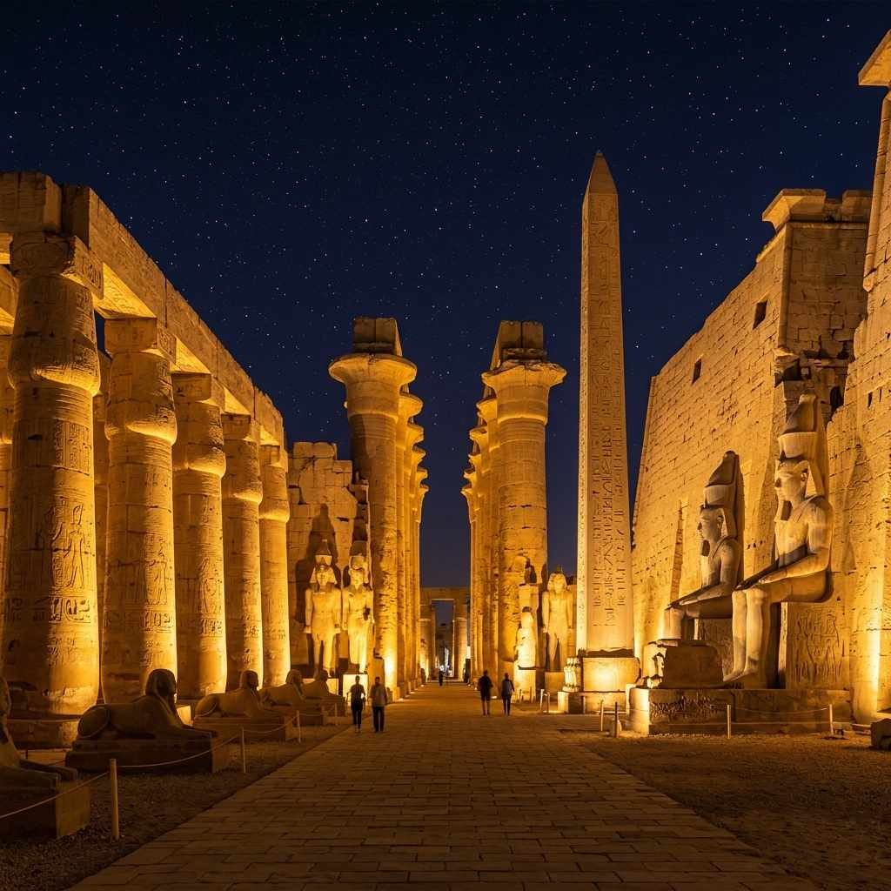
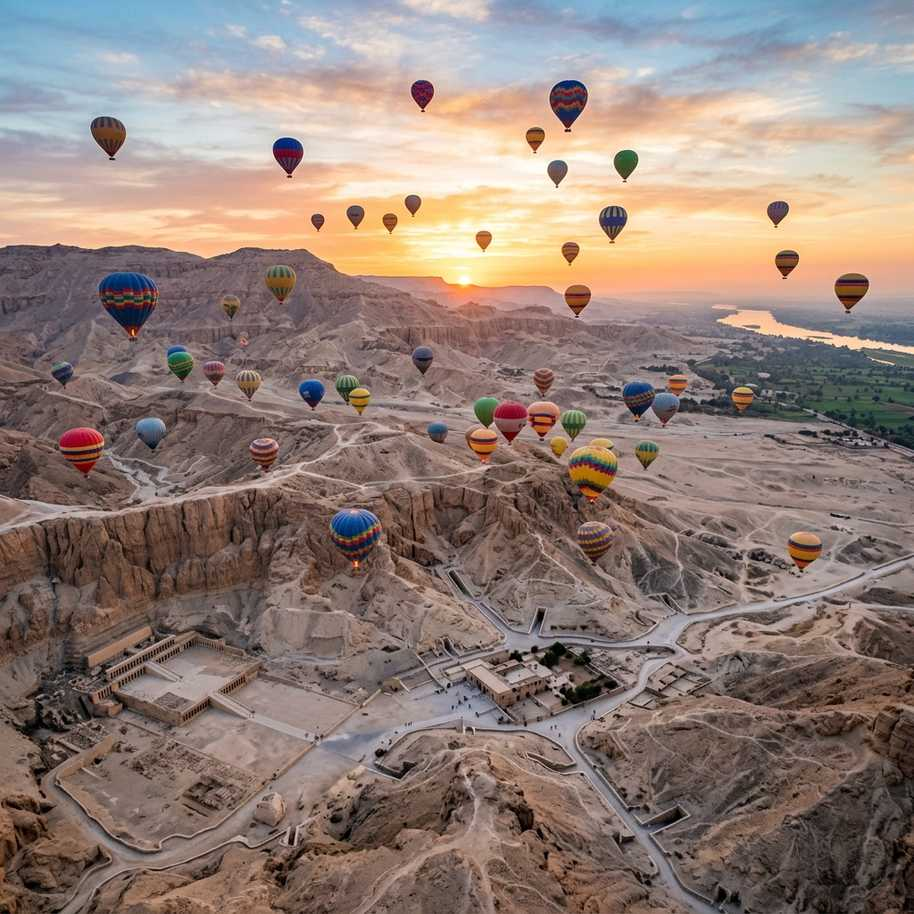

𓂀𓃭𓆣𓇳𓂋𓅃𓃀
Ptolemaic Masterpiece
Edfu Temple
The Most Perfectly Preserved Temple of Ancient Egypt
The Most Perfectly Preserved Temple of Ancient Egypt
Dedicated to the falcon god Horus, Edfu Temple is the most intact ancient temple in Egypt. Built during the Ptolemaic era, its massive entrance pylons, hyperstyle halls, and inner sanctuaries remain almost completely undamaged, offering a perfect window into ancient Egyptian temple architecture and rituals.
Construction began in 237 BC under Ptolemy III Euergetes and was completed in 57 BC under Ptolemy XII. The temple is built on the site of an earlier, smaller temple. Over the centuries, it was buried under 12 meters of desert sand and silt from Nile floods, which preserved it perfectly until it was excavated by French archaeologist Auguste Mariette in the 1860s.
Make the most of your visit with these experiences.
Walk through the grand court and enter the columned hall, with 12 massive columns decorated with floral capitals.
Marvel at the giant black granite statues of the falcon god Horus guarding the main temple entrance.
Explore the dark, innermost sanctuary containing a rare polished granite naos (shrine) for the sacred boat.
Study the detailed wall carvings depicting the mythical battle between Horus and Seth (as a hippopotamus).
Arrive from the Nile cruise ship dock via a traditional horse-drawn carriage through the streets of Edfu.
Visit the surrounding colonnaded Mammisi, where the divine birth of Horus was celebrated.
See the beauty that awaits you.


.jpg)

Everything you need to know for a perfect visit.
If visiting from a cruise, the horse carriage is included in your tour. Hold on tight as the drivers go fast.
Edfu gets crowded when cruise ships arrive. Visiting at 7 AM opening avoids the large tour groups.
Some of the inner chambers and corridors have limited lighting, revealing beautiful soot-blackened ceilings.
Although the temple interior is shady and relatively cool, the open courtyard is very sunny and hot.
The inscriptions explain the Opet-like festivals and temple rituals — a guide is essential to interpret them.
The ticket office is located at the modern visitor center near the main parking area.
November to February. Early mornings are best to beat the cruise ship crowds.

Let our local experts craft the perfect itinerary for your Egyptian adventure.